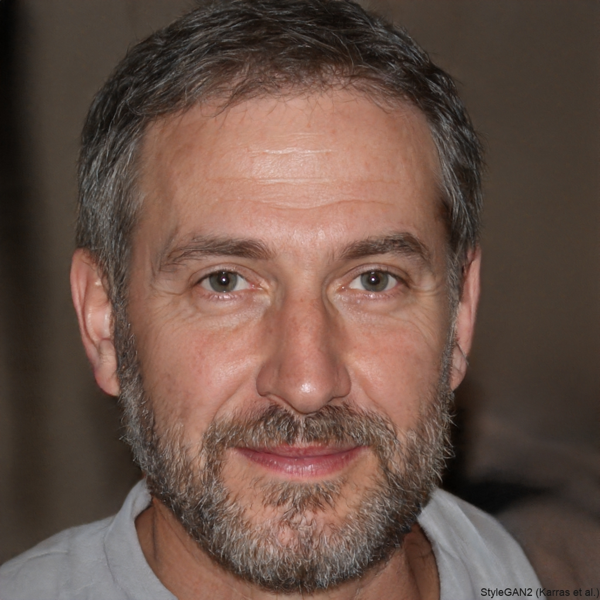

About me
Helping You Move Better, Feel Stronger, and Live Pain-Free

Welcome! I'm Dr.Brett Morgan, a licensed physical therapist dedicated to helping people regain mobility, reduce pain, and enhance their overall well-being. With 12 years of experience in post-surgical recovery and orthopedic rehabilitation, I take a personalized approach to every treatment plan, ensuring that you get the care that you need and deserve and help you achieve your goals.
My Approach
I believe in a holistic, patient-centered approach to physical therapy. My goal is not just to treat symptoms but to identify the root cause of discomfort and create customized treatment plans that promote long-term healing and strength. Whether you're recovering from an injury, managing a chronic condition, or looking to improve your athletic performance, I'm here to guide you every step of the way.
My Background
- Education: Doctor of Physical Therapy, Univeristy of Southern California
- Cerfitications: Manual Therapy (2013), Orthopaedic Rehabilitation (2015)
Let's Get Started!
I’m passionate about helping my patients move better and feel stronger. If you're ready to start your recovery journey, let's connect!
Email: brettmPT@gmail.com